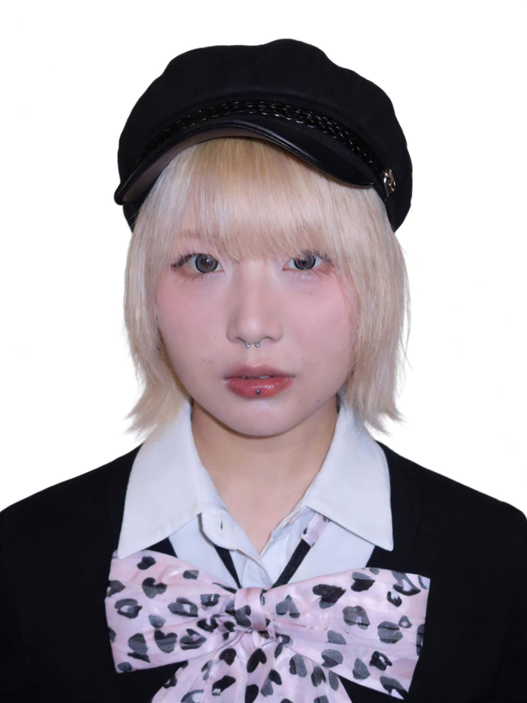

熊艺 · XIONG YI
内容创作者 | 文学研究者
💼 核心能力
从哲学科普到品牌叙事，从新媒体运营到内容策略，我擅长将复杂概念转化为易懂的表达，用文字连接品牌与用户。
不知道小纸条们有没有这样的感受：在这个信息爆炸的时代，我们似乎拥有了更多的选择，却越来越难以与世界建立真正的联系。
我们沉浸在社交媒体的点赞与评论中，享受着"被看见"的快感，同时又忍受着被忽视的焦虑。我们活在算法推荐的世界里，看到的全是自己想看的，接触的全是同温层的人，越来越难以接受异见，甚至对"他者"感到不耐烦。
韩炳哲认为，现代社会的"他者的消失"正在让我们变得越来越自恋、越来越焦虑，也越来越孤独。
为景观设计公司撰写品牌推广文案，结合中国传统文化与现代设计理念，输出具有文化深度的内容。文案风格兼具专业性与可读性，成功提升品牌调性。
"景观，不再是附着于建筑肌体的末端修辞，而是自设计发端，便以系统性视角深度介入其生成机制。从布局的空间逻辑、体块的形态组织，到尺度与节奏的动态编排，与建筑共源同构，在协同中构筑出完整、内在一致的场所秩序。"
核心观点：动画片《哪吒闹海》所带来的绝望感在于，无论哪吒如何神通广大、如何藐视世俗规则，在结构性的压迫面前，他依然无路可逃。
"想要跳脱出这张无形之网，唯一的途径竟然只能是'剔骨还父、削肉还母'——以近乎宗教式的献祭和殉道，彻底割裂与整个体系的联系。在这套规训体系面前，哪吒即便拥有通天本领、即便不屑一切规则，最终仍在由观念与意识形态构筑的无形牢笼中显得无比无力，通向的也只是一个虚无的结局。"
"在过去旅游过的城市中行走，也从未有过这么强烈的身份焦虑感。行走在香港街头，听见无数种语言组成一个巨大的语音河流，意识到自己的身份是漂浮的，像婴儿般无知，无法辨认那个异质而陌生的世界。"
深度文化评论 + 生活美学分享，打造"有思想深度的文艺青年"人设
70%深度内容 + 30%热点追踪，保证内容质量的同时提升曝光
24小时内回复所有评论，建立用户信任感和粘性
根据后台数据调整发布时间（晚8-10点）和内容形式
"人攀明月不可得，月行却与人相随。"
在本诗中，这句古典名句被重新唤起，作为一种顿悟：
爱无法真正占有，但情感与记忆会以"月光"的方式、以某种柔软的轨迹，在生活中伴随。
✍️ 写作理念
散文是思想的漫游，是对生活细节的凝视，是哲学与诗意的交织。我试图在日常经验中捕捉那些被忽视的真实，用文字记录时代的温度与个体的困境。
"真正的写作不是为了表达已知，而是为了探索未知。在书写的过程中，我们与自己对话，与世界和解，与时间抗争。"
— 熊艺
📚 写作主题
📰 发表记录： 《别忘了乡村的月光》收录于中国青年网、大学生网等多个国家级网站
累计非虚构写作 3w+ 字 | 涉及哲学、文化、旅行等多个领域
2025.12
柏拉图的洞穴寓言为什么如此迷人？因为它承诺了一个elsewhere——一个别处。那些坐在洞穴里的囚徒是可悲的，因为他们不知道外面有什么。而我们读着这个寓言的人，自动地把自己想象成那个已经走出洞穴的人，或者至少是那个知道洞穴之外有世界的人。
光明对抗黑暗，真理对抗虚假，智者对抗愚民。这是一个关于启蒙的童话，它用简单的二元对立取代了生活的暧昧性。这是kitsch最狡猾的机制：它让我们相信自己站在正确的一边。
我的朋友曾说，柏拉图是一个生病的希腊人。我理解他的意思。健康的人不会如此憎恨身体，不会如此迫切地想要逃离感官的世界。只有那些无法忍受生命本身的人，才会发明一个"理念世界"来贬低此时此地的存在。
"在布拉格的某个冬夜，一个男人和一个女人躺在床上。窗外是查理大桥的灯光，室内是两具疲惫的身体。柏拉图会说：这只是肉欲，只是洞穴里的影子游戏。真正的爱情在理念世界，在那个永恒的、纯粹的'爱'的形式之中。"
但这个男人抚摸着女人肩膀上的那颗痣。这颗痣是独一无二的，它不是任何"理念"的摹本。女人的呼吸声、她头发的气味、她皮肤的温度，所有这些都是无法被"理念"化约的。如果我们把这些都称作"虚假的影子"，那么真实究竟在哪里？
二十世纪的哲学家们，尤其是那些法国人，终于开始质疑柏拉图的这套把戏。梅洛-庞蒂会说，是身体在思考，而不是某个脱离身体的"灵魂"。海德格尔会说，情绪不是理性的障碍，而是我们理解世界的方式。这些话听起来很深奥，但其实很简单：他们只是在说，洞穴就是我们的家。
真正的智慧不在于走出洞穴，也不在于安心地留在洞穴里，而在于理解这种处境的不可能性。我们是那种注定要追问"什么是真实"的动物，同时又注定永远无法得到答案。我们的悲剧不是被困在洞穴里，而是我们知道自己被困在洞穴里。这个"知道"本身就构成了一种奇特的自由。
2021.07
📰 此文收录于中国青年网、大学生网等多个国家级网站
我想，多年以后，当我站在田垄面前，准会想起那个遥远的下午。想起2021年的那个暑期，跟随着安徽师大文学院"亭城寻党"社会实践队伍来到滁州天长，在铜城龙岗遇到的那位眼里有光的芡实种植户陈阿姨。
陈阿姨是个热心又健谈的农妇，谈及鸡头果，她如数家珍。她提到自己最幸福的时刻，她亮闪闪的目光向远处眺望着，却没有落在哪一处，仿佛陷入一种温情的回忆，她说："鸡头果丰收的时候是我最幸福的时候，我们龙岗的男女老少都敞开家门，在自家院里慢悠悠地清洗、剥壳。闻到果实的那股清香，我都感到充实和满足，自己的辛苦、汗水，一切都值了。"
"为什么我的眼中常含泪水，因为我对这土地爱得深沉。"
— 艾青
阴沉沉的天空下，陈阿姨眼睛里闪烁的光彩让我误以为是好天气里太阳光的折射，后来，在我一遍遍重复回看陈阿姨的采访视频时，我突然明白，陈阿姨眼中亮晶晶的东西十分复杂——那是对龙岗这片养育一方人的土地深深的眷念与崇敬；那是对自己奉献大半生精力、时间来种植、出售芡实，一步步稳扎稳打地形成了一片小天地的成就感、满足感和获得感。
突然想起家乡夜晚的天空，夏日清澈的河流，田野间随风摇动的野花，傍晚檐下的归燕，奶奶回家的呼唤。她那时总牵着我的小手，沿着弯弯的小路，对我说：跟着月光走，就能找到回家的路。
累计学术写作10w+字
研究方向：比较文学、后现代叙事
发表多篇学术论文与文学评论
2024.02 | 比较文学研究
摘要：
阿根廷作家里卡多·皮格利亚发表于1980年的小说《人工呼吸》是一部文体混合型叙事作品，其中散文、对话、书信、传记、日记交织在一起，内容上涉及对历史、哲学、文学等诸多领域的评述。
可以说，《人工呼吸》是一部极具"互文性"与"不确定性"的后现代戏仿、"拼贴"之作，文本之间的嬉戏就犹如一张由作家精心织就的迷宫，作家借鉴侦探小说追踪解谜的结构，将自己真正想叙述的故事层层编码，设置成谜团隐藏于小说的"可见故事"中。
小说真正未言明的，恰恰是它本身想要叙述——高压与黑暗的阿根廷军政府独裁统治下严肃而残忍的历史真实。
2021.12 | 现代文学研究
核心观点：
"他们一边挂着粉，也是一边唱着的。等粉条晒干了，他们一边收着粉，也是一边地唱着。那唱不是从工作所得到的愉快，好像含着眼泪在笑似的。逆来顺受，你说我的生命可惜，我自己却不在乎。你看着很危险，我却自己以为得意。"
— 萧红《呼兰河传》
2023.10 | 比较文学研究
哈姆雷特与堂吉诃德分别是莎士比亚和塞万提斯笔下创造出的一对极其相似却各有特点的文学形象。二人都是迷信书面符号的人，都试图越过隐含读者的身份框架，整合经验世界与符号世界。
哈姆雷特接受的是精英式的学院教育，而堂吉诃德迷恋的是大众化的通俗符号。前者接受了关于生活应然的叙事，而这种叙事在生活实然中遭遇了毁灭性的崩溃；后者则混同了虚构骑士小说叙事与经验世界。
2020-2023 | 文学批评
余华热衷于写苦难、暴力、虐待的场面。也许是由于一种恐惧，这种恐惧是出于人生而必死的现实依据的，人无法控制死亡、无法完全掌握未知的明天，因而疯狂的暴力似乎能让人尝到做神的乐趣。
拉斯科尔尼科夫的信仰一跃实际是他的逻辑自杀。在信仰"上帝不存在"之后自杀式的谋杀行为引发的心理歉疚验证其逻辑的失误后，他痛苦地选择一条与前逻辑相悖的信仰之路。
悉达多为了追寻人生的意义，在艰难曲折的路途中恰明白所谓的"意义"在于爱具体的人，在于切实鲜活地生活，而非抽象的人、生活的形而上意义。用悉达多自己的话称："爱事物胜于爱言辞。"
尤奈斯库打破了文学真实与生活真实的界限，现代生活中的"反生活性"叙事与文本的"反文本"叙事构成一种互文——活在这个世界上就是活在尤奈斯库的戏剧舞台上。
高中语文教学设计 | 教案 + 讲稿 + PPT
注重文本细读与思辨能力培养
教学目标：
教学重点：
掌握"知人论世"的文艺鉴赏方法，借助已学过的知识加深对现学知识的理解。
"文题可否换成'北平的秋'？要弄懂这个问题，我们得明确'故都'一词的特殊韵味。'故'有'从前的'、'过去的'的意思，人们对'从前的'、'过去的'的事物往往会产生怀念、眷恋等感情。"
教学目标：
核心问题：
"千万别闹出什么乱子"
— 这句话在文中出现了四次，每次的语气和含义有何不同？
核心观点：
哈姆雷特的延宕不是性格缺陷，而是人类面对复杂现实时的普遍困境。
延宕的三重原因：
"哈姆雷特就像一面镜子，映出了我们自己的样子。我们为哈姆雷特感到惋惜，在认知理论里，我们其实在为自己感到惋惜。"
三层认知递进：
1. 普通认知：
喜剧让人笑，悲剧让人哭
2. 进阶认知：
悲剧是将人生有价值的东西毁灭给人看，喜剧是将人生无价值的撕破给人看（鲁迅）
3. 高阶认知：
真正的喜剧是以悲剧为内核的